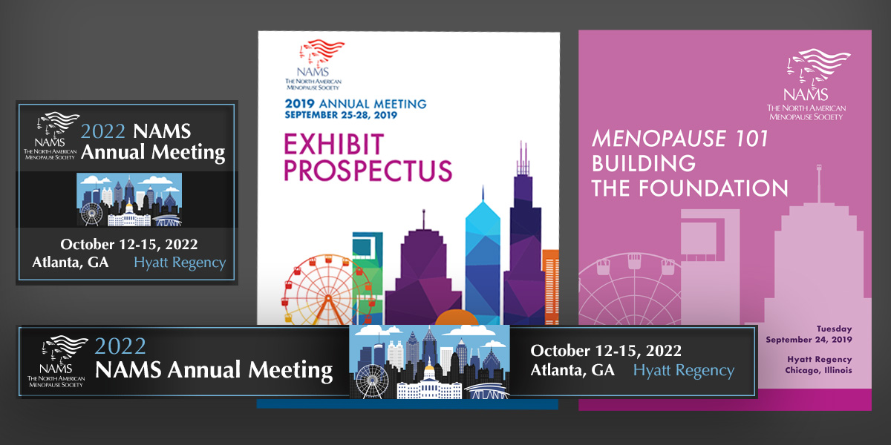

E-Commerce Website
www.acornonline.com
The Acorn website features approximately 2,400 gift and entertainment products. I maintained this database-driven website for a little over two years, regularly adding and deleting products and updating pricing using SQL commands and phpMyAdmin. I also created customized landing pages and added promotional banners.
Event Materials
Much of my design work has been related to events. I've created digital and print advertising to promote events, as well as the materials used at the time of the event, such as program guides, posters, signs, and presentation materials.
I've created designs for the annual meetings of a medical society (some of which are pictured above), for business events, and for non-profit organizations' fundraisers.
HTML Emails
I've created thousands of promotional emails, directly coding the HTML and CSS or with the use of email service providers' tools.
Logo Design
I've designed logos for new branding efforts and within existing design systems. The Soldiers To Sawyers logo (above) was an entirely original concept, while the Women Who Roared logo (below) was designed for a Girl Scout event and needed to conform to that organization's brand standards.